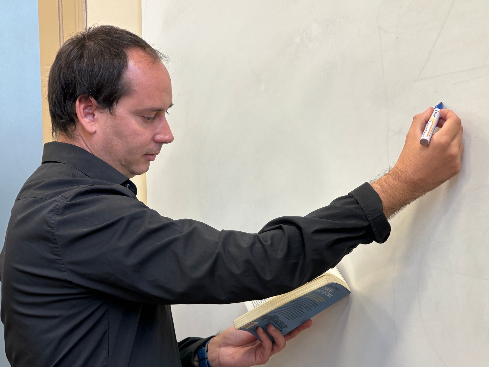

REASONING
Arjun Mehta
Focuses on logical structure, puzzle breakdown and timed reasoning sets.
- Puzzles & seating
- Syllogisms
- Exam strategy
Meet subject-focused mentors who break competitive-exam topics into understandable lessons, practice routines and revision strategies.

“Explain the method first. Speed follows with practice.”
Our faculty experience is designed around explanation, worked examples and exam-style application—not memorising shortcuts without context.
Understand the idea before attempting timed practice.
Connect each topic to the way questions appear in competitive exams.
Use mistakes to decide what should be revised next.
Each profile highlights a teaching focus so students can quickly understand where that faculty member fits into their preparation.
Focuses on logical structure, puzzle breakdown and timed reasoning sets.

Builds reading accuracy, grammar confidence and practical vocabulary habits.

Connects static concepts with current context for structured revision.

Combines quantitative practice with banking-exam time management.